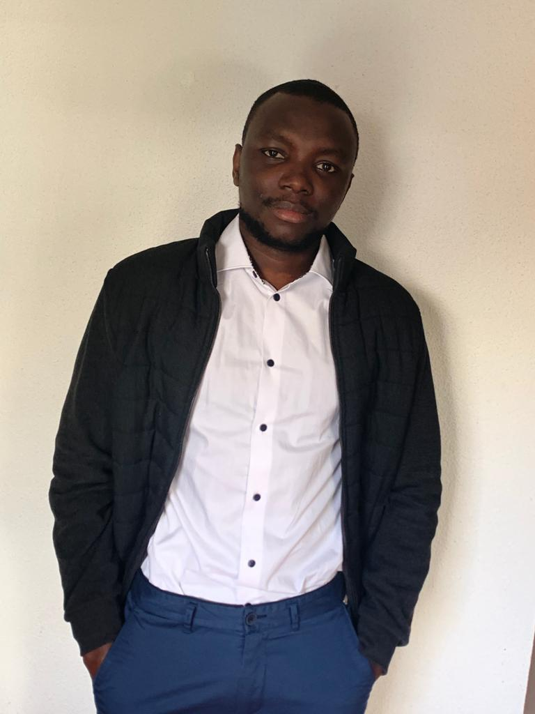
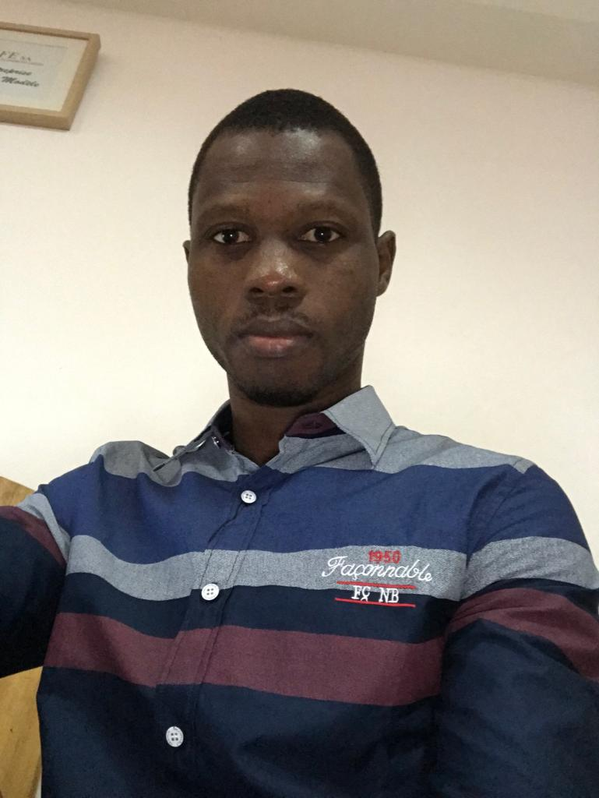

La direction de Teckruns

Yabinami Damename KOLANI
Fondateur de Teckruns
Fondateur de Teckruns
A Propos du fondateur
Ingénieur DevOps, Yabinami Damename KOLANI est un jeune togolais dynamique qui a fait ses épreuve dans plusieurs PME au Togo. En 2017 il est partir continuer ses études en france à Amiens. Après son installation en france, il a travaillé dans plusieurs entreprises
Koffi Benoît DZAHINI
Co-Fondateur de Teckruns
Co-Fondateur de Teckruns
A propos du Co-fondateur
Ingénieur en système réseau et developpeur full stack, Koffi Benoît DZAHINI est le co-fondateur de Teckruns. Il a entre autres travaillé dans des pétites et grandes entreprisesdu Togo en tant que technicien informatique, dont CAFE informatique et télécommunication, ONG Carrefour Tier Monde.
